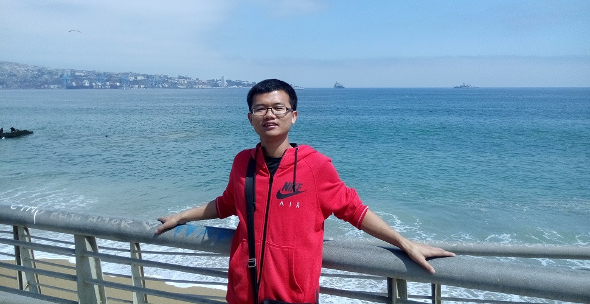

|  |
Yanhua Cheng 程衍华
Ph.D. Candidate, supervised by Prof. Kaiqi Huang
|
News
-
Our paper "Semi-supervised Multimodal Deep Learning for RGB-D Object Recognition" has been accepeted by IJCAI2016.
Biography
-
I am a 4th-year M.D-Ph.D. student in National Laboratory of Pattern Recognition (NLPR), Institute of Automation Chinese Academy of Sciences (CASIA). My supervisor is Prof. Kaiqi Huang.
-
I received the Bachelor degree in Department of Automation from Huazhong University of Science and Techonology (HUST).
-
Now, I am also an intern in MSRA, and my mentor is Lead Researcher Rui Cai.
-
My research interests include computer vision, deep learning, especially 2D and 3D object recogntion/scene understanding.
-
Know more about me, please see my CV (Chinese Version) or CV (English Version).
Journal Papers
 |
Yanhua Cheng, Xin Zhao, Kaiqi Huang, Tieniu Tan |
Conference Papers
 |
Yanhua Cheng, Rui Cai, Zhiwei Li, Xin Zhao, Kaiqi Huang |
 |
Yanhua Cheng, Xin Zhao, Rui Cai, Zhiwei Li, Kaiqi Huang, Yong Rui |
 |
Yanhua Cheng, Rui Cai, Chi Zhang, Zhiwei Li, Xin Zhao, Kaiqi Huang, Yong Rui |
 |
Chi Zhang, Zhiwei Li, Yanhua Cheng, Rui Cai, Yanghong Chao, Yong Rui |
 |
Yanhua Cheng, Rui Cai, Xin Zhao, Kaiqi Huang |
 |
Yanhua Cheng, Xin Zhao, Kaiqi Huang, Tieniu Tan |
Competitions
 |
ILSVRC 2014: ImageNet Large Scale Visual Recognition Challenge. Our team (Weiqiang Ren, Chong Wang, Yanhua Cheng, Kaiqi Huang, Tieniu Tan) is the winner of the task: Image classification with additional training data. See details here: Results of ILSVRC2014. |
 |
SHREC’15 Track: 3D Object Retrieval with Multimodal Views Challenge. Our team (Yanhua Cheng, Xin Zhao, Kaiqi Huang, Tieniu Tan) win the first place on NN and NDCG criterion for the task "retrieval based on 721 images of each object". See details here: Results of SHREC'15 Track. |
 |
阿里巴巴大规模图像搜索大赛2015. 我们小组(Yanhua Cheng, Yueying Kao, Dangwei Li) 在843只队伍脱颖而出晋级决赛并获得了优秀奖. 具体详见: 天池竞赛 |
 |
第十届全国机器人大赛暨2010年FIRA世界杯机器人大赛中国队选拔赛. 我们代表华中科技大学获得了类人型机器人障碍跑冠军和类人型机器人举重亚军. 具体详见: youku; pic |
{kind=link}